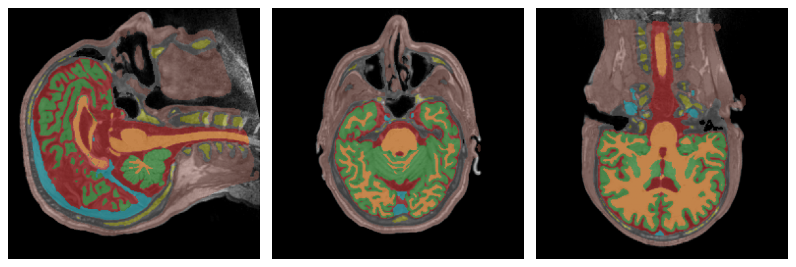
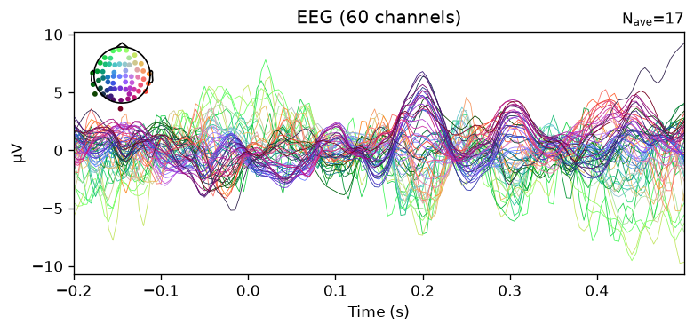
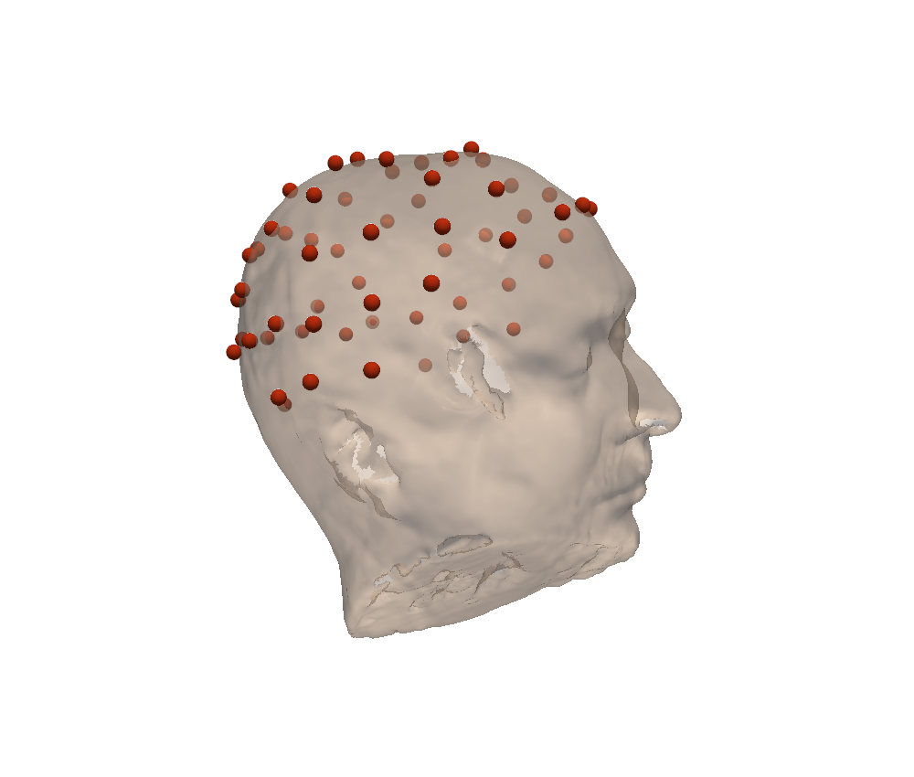
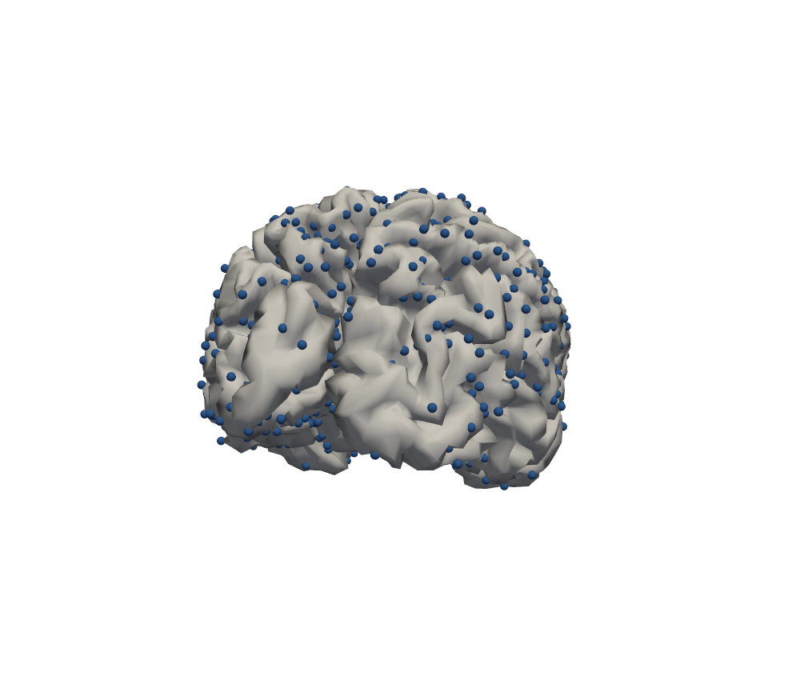
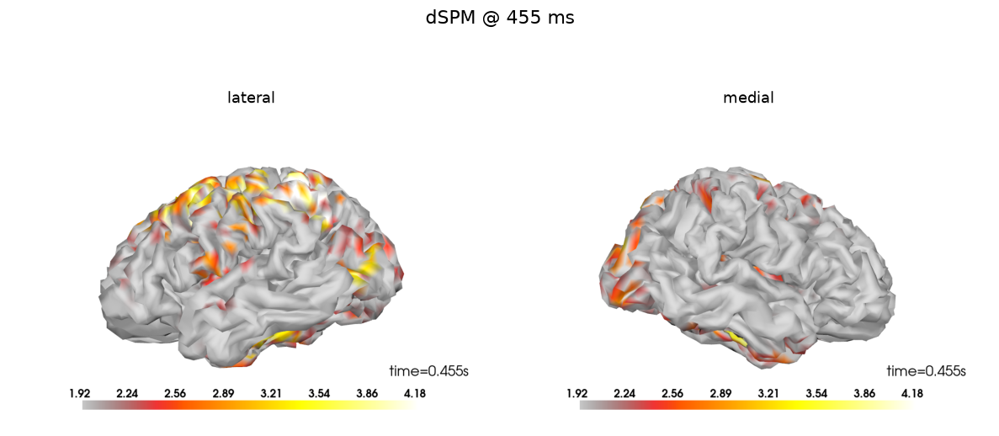
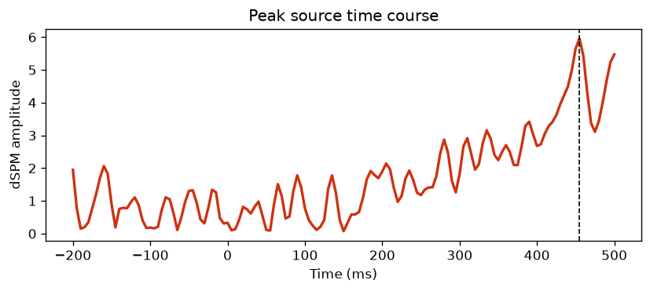

The nominal run: a DICOM MRI and an EEG go in, a cortical source estimate comes out. We visualise every stage on the sample example subject.
The single call
The whole surface pipeline (SimNIBS FEM route, Windows-native) fits in one call. Each argument maps to a stage detailed below.
from mri2mne.wrapper import reconstruct_sources
result = reconstruct_sources(
subject="sample",
output_dir="D:/derivatives",
dicom_dir="D:/dicom/sample", # MRI: a DICOM folder
eeg_file="D:/eeg/sample.edf", # EEG to localise
digitization="D:/dig/sample.elc", # electrode positions
simnibs_bin_dir="C:/Users/me/SimNIBS-4.5/bin",
events="find", event_id={"aud_l": 1},
tmin=-0.2, tmax=0.5, baseline=(None, 0.0),
inverse_method="dSPM", snr=3.0,
)
print(result.source_estimate_file, result.peak)Step 1 — Anatomy (DICOM → T1)
The DICOM folder is anonymised then converted to a single T1 NIfTI volume. That image is all the rest of the pipeline needs.

sample subject's T1, sagittal, coronal and axial slices.Step 2 — The head model (SimNIBS charm)
charm segments the T1 into tissues (grey and white matter, CSF, skull, scalp…) and builds a mesh from them. This is the long step (~1–2 h) and the core of the physics: current conduction depends on this anatomy.

Step 3 — Electrodes and EEG signal
Electrode positions come from the digitisation (EDF stores none). Their labels must match the EEG channels; mismatches are reported, not silently dropped.

The continuous recording is read, then band-pass filtered (1–40 Hz by default) and set to an average reference.

Step 4 — The evoked response
Events cut the signal into epochs, averaged into an evoked response. That is what gets localised. The noise covariance is estimated from the pre-stimulus baseline.


Step 5 — Coregistration
The electrodes are aligned to the mesh-derived scalp (ICP). This is the most sensitive point: a wrong pose shifts the sources without breaking anything downstream, so the residual is measured and plotted for a visual check.

Step 6 — The forward model
SimNIBS solves the forward problem by finite elements: for each cortical source point, the potential at each electrode. The source space is the central cortical surface.

Step 7 — Inverse and sources
Forward, covariance and EEG combine into an inverse operator (minimum-norm: dSPM here), applied to the evoked response to yield the source estimate on the cortex.


result.peak gives the location of the maximum in millimetres (MRI frame) and its latency — often the clinical deliverable. A per-subject HTML QC report is written as well.
Where to go next
The scenarios that follow change only a few arguments of this same call: already-preprocessed EEG, an external events file, or starting from a T1 without DICOM.